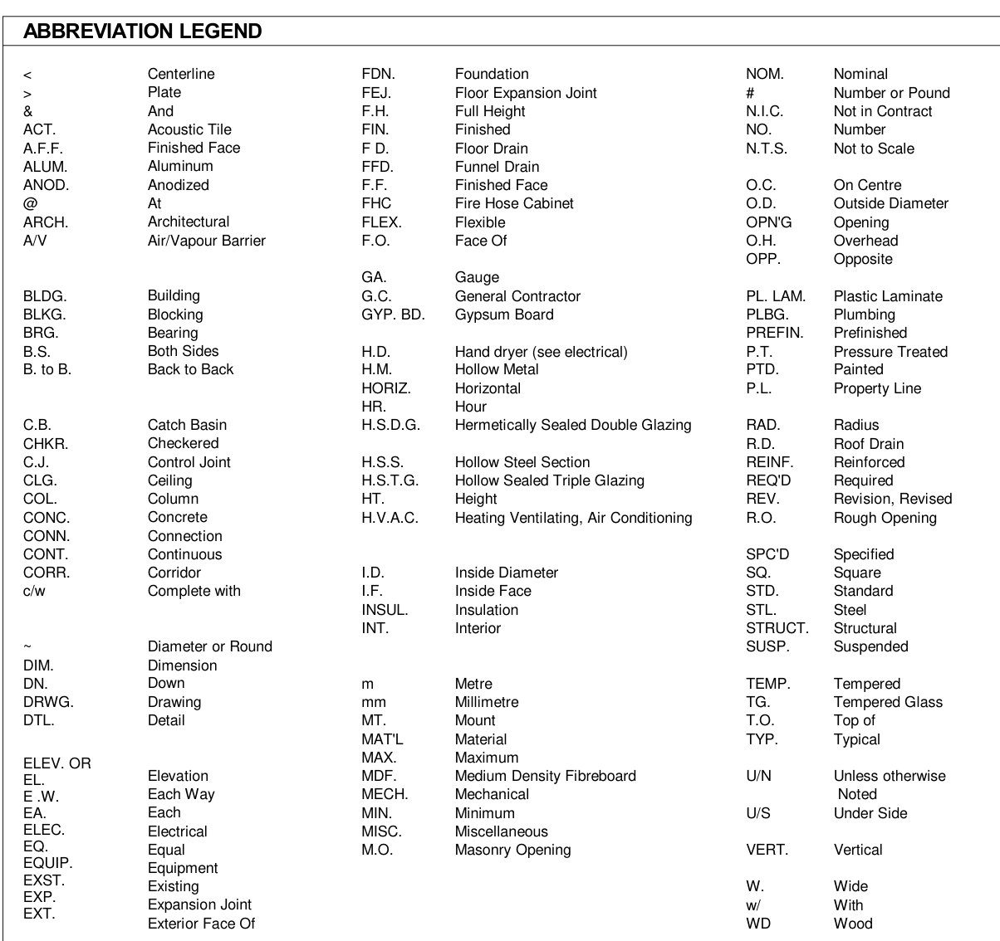
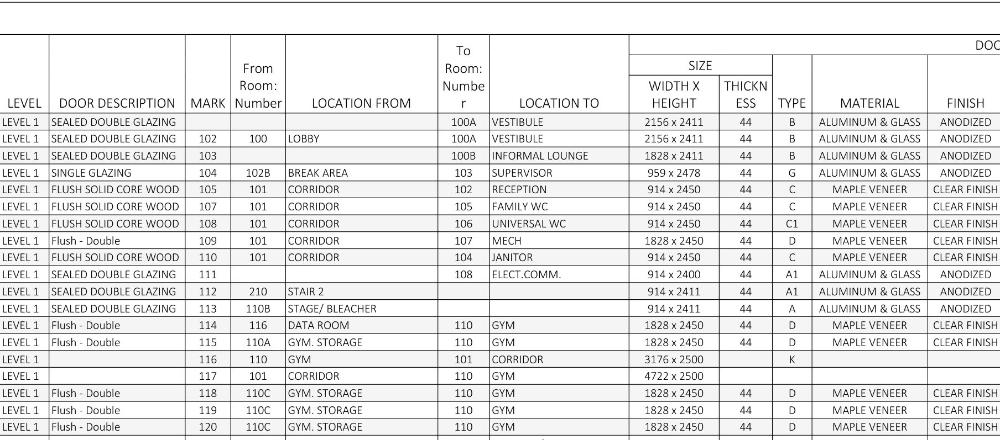
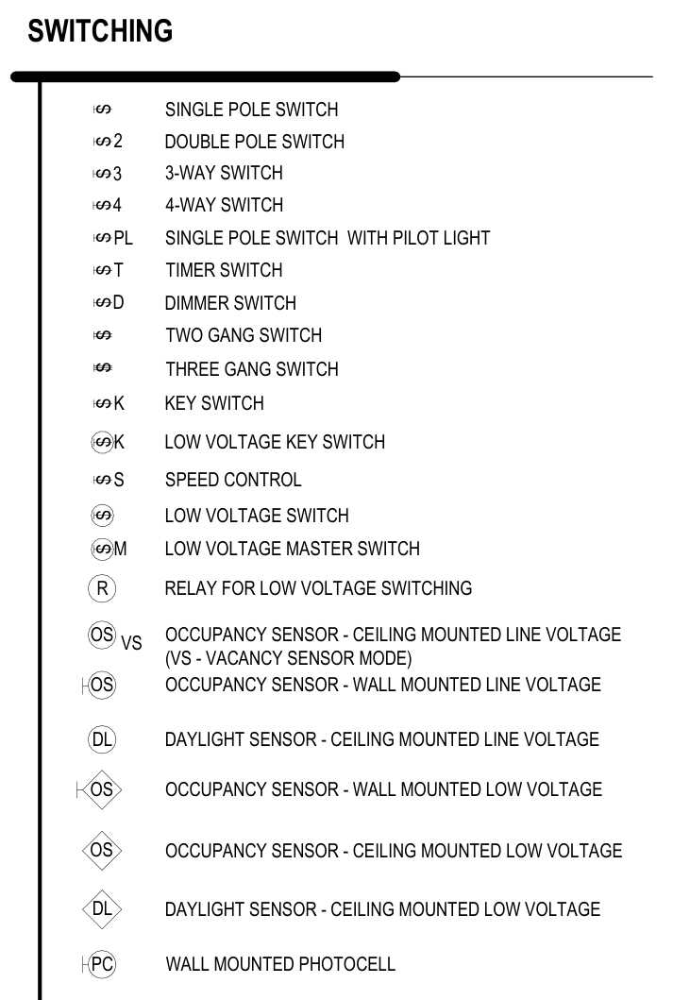
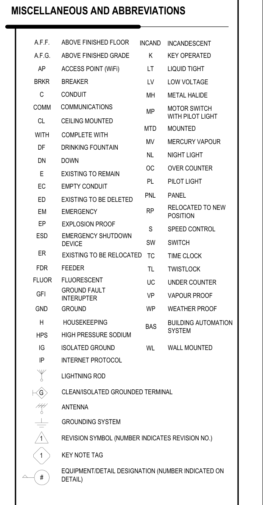
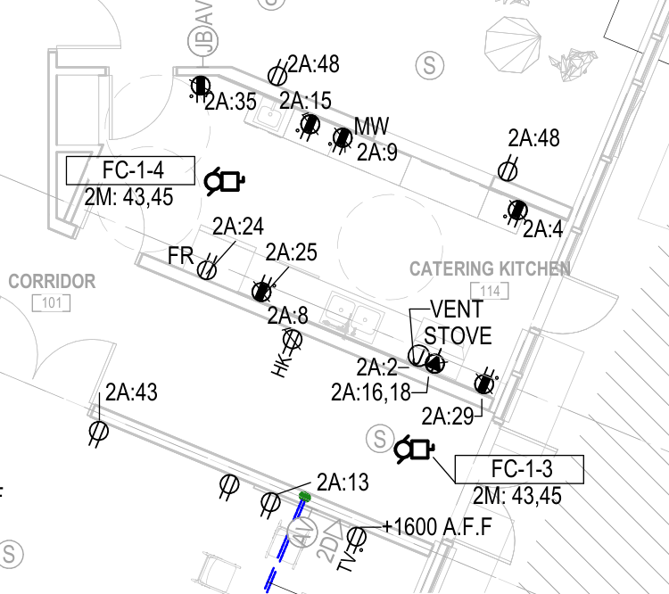
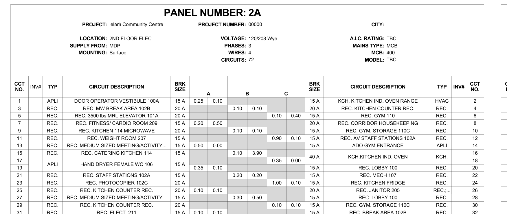
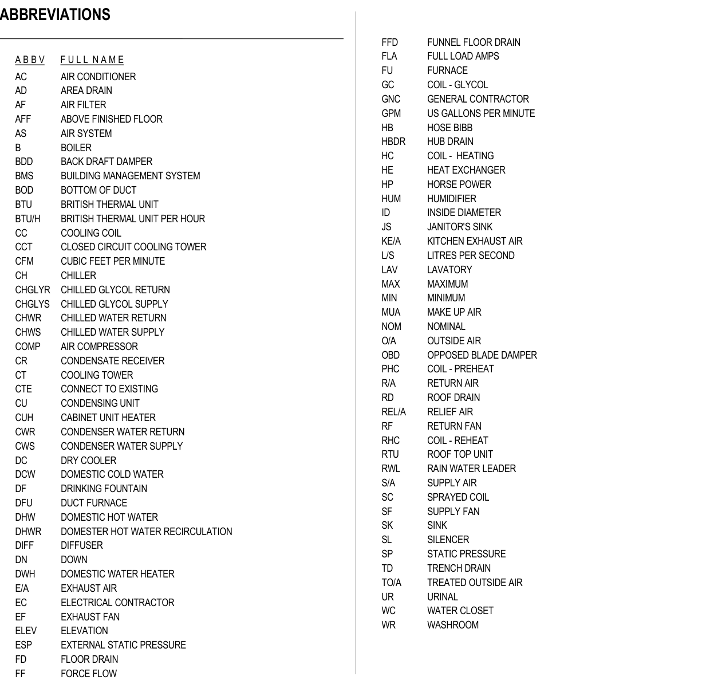
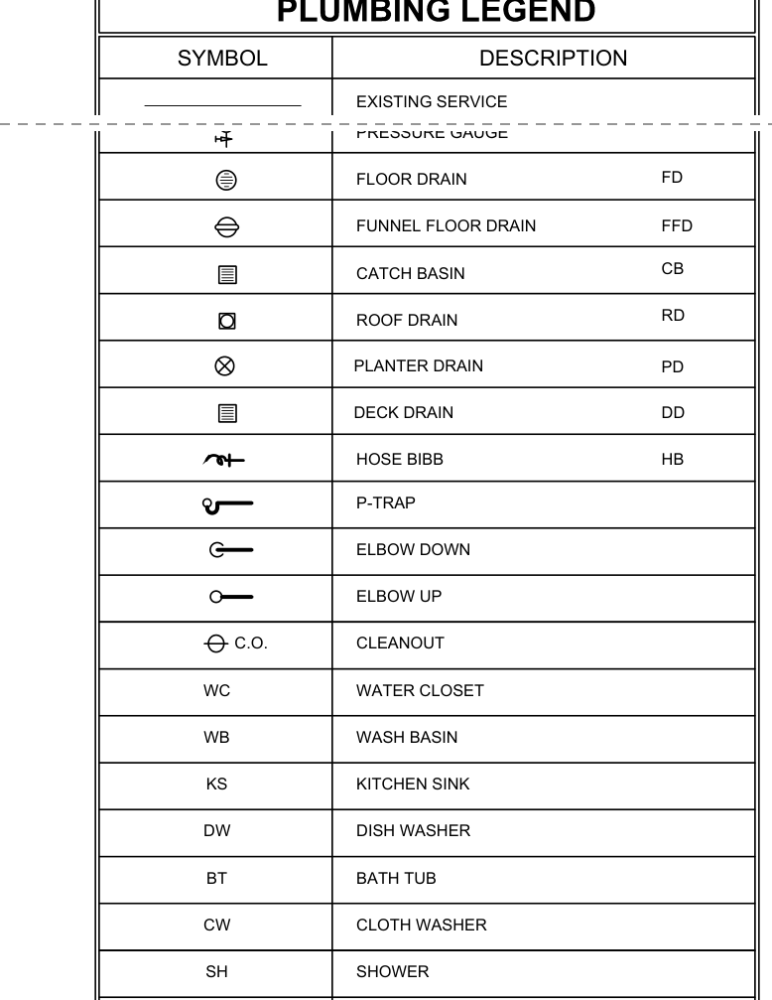
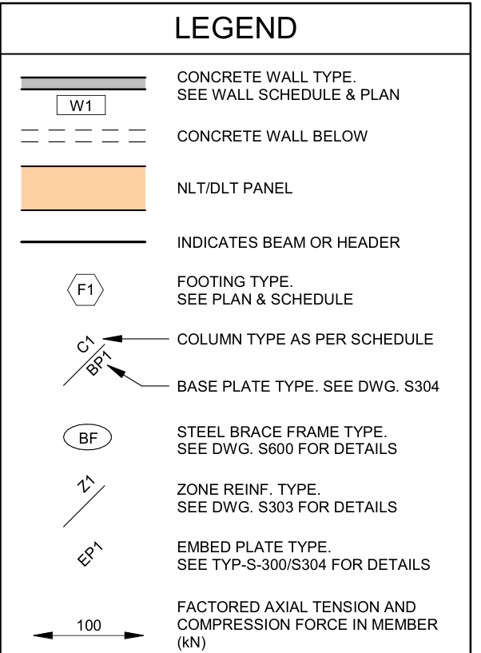
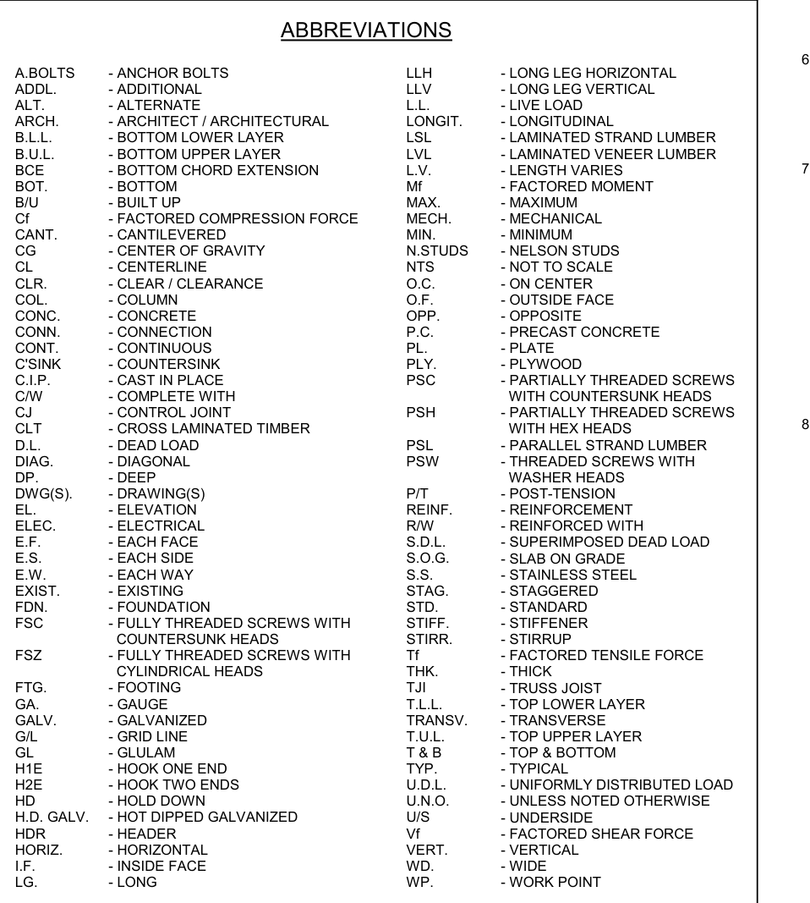

Why this matters on the job
A drawing is mostly symbols. A small circle with "C / A-502" in it sends you to another sheet. An oval with "119" in it is a door you will hang. A circle with two lines is a receptacle an electrician will rough in. None of these make sense until you look them up. Every set has a legend for its symbols and a list of its abbreviations, and they are not the same from job to job. Good tradespeople do not memorize every symbol. They know where to look it up.
This lesson uses real sheets from the same three sets as lesson 16: London Square (imperial teaching set), leləm̓ Community Centre (metric, 2022) and, through lesson 16, Fire Hall No. 3 (1999).
Key ideas
1. The legend is the dictionary for that set. Look for sheets with names like "Legends", "Symbols" or "Abbreviations", often the first sheet of each trade. In this lesson: - London Square A-100 has a drawing symbols legend and an abbreviation legend for the architectural sheets. - leləm̓ E-001 is the electrical symbol legend. M0.01 holds the mechanical legends: pipes, valves, plumbing, ducts, fire protection and abbreviations. - leləm̓ S200 has a small structural legend. S101 has the structural abbreviations. - Floor plans often have a small legend of their own, such as the fire rating legend on leləm̓ A-201.
2. Grid lines and grid bubbles. Long thin lines with a bubble at the end are grid lines. They run through the columns and main walls. One direction is numbered (1, 2, 3...) and the other is lettered (A, B, C...). Crews use them to say where something is: "the door near grid C-2". Dimension strings measure between grid lines, so grids are where layout starts.
3. North arrow. A north arrow shows which way north is on the sheet. Some sets show true north (on the earth) and project north (a direction picked to keep the drawing square on the page).
4. Markers that send you to another sheet. A circle split by a line holds two numbers: the view number on top and the sheet number below. So "C over A-502" means view C on sheet A-502. - A section marker sits at the end of a cut line. The solid triangle or arrow points the way you are looking. - A wall section marker works the same way, for a cut through one wall. - An elevation marker points at a wall to show which way the elevation looks. - A detail callout circles a small area and sends you to a bigger drawing of it.
5. Tags point to schedules. A tag is a small shape with a mark in it. - Room tag: room number (and often the name). - Door tag: door mark. Look it up in the door schedule. - Wall tag: wall type. Look it up in the wall assembly schedule. - Window tag: window type. Look it up in the window schedule. - Equipment or fixture tag: for example WC-1 or EF-1. Look it up in that trade's schedule.
The shape of each tag is set in the legend. It changes from office to office.
6. Schedules are tables. A schedule lists every item of one kind with its size, type and material. A door schedule lists each door mark. A room finish schedule lists each room's floor, base, wall and ceiling finish. A footing schedule lists footing sizes and rebar. A panel schedule lists each electrical circuit and its breaker. The tag on the plan is the key that opens the right row.
7. Trade symbols. Electrical plans use symbols for receptacles, switches and lights, plus a circuit label such as 2A:24 (panel 2A, circuit 24). Plumbing plans use fixture tags and line types for each kind of pipe. HVAC plans show ducts with their size and what air they carry. Structural plans use footing, column and wall marks.
8. Abbreviations change meaning. The same letters can mean different things in different trades, or even on the same sheet. Always read the abbreviation list for the trade you are working from. If something in the legend looks wrong, ask.
Worked example
Question: On leləm̓ A-201, what does the marker labelled B in Figure 3 mean, and where do you go next?
- Look at the marker: a circle split by a line, with C on top and A-502 below, and a solid black triangle behind the circle. The triangle points up the sheet, the way you look at the cut.
- The London Square legend (Figure 1) shows this kind of marker for building sections and wall sections. The leləm̓ set uses the same idea. The top is the view, the bottom is the sheet.
- In the leləm̓ drawing list (lesson 16, Figure 2), A-502 is "Building sections".
- Answer: it is building section C, drawn on sheet A-502. Go to A-502 and find the view titled C.
Practice documents
Tap a figure to open it full size, then zoom in.
![The London Square drawing symbols legend. North arrow marked true/project north. Drawing title with a circled number and Scale 1:100. Building section and wall section marker: a split circle with 1 over A101 and a triangle. Room tag: room name over 101 in a box. Floor or construction elevation: a half-black circle with name and elevation. Door tag: 101 in a rounded shape. Wall tag: 1i in a rectangle. Window tag: 1t in a hexagon. Floor and roof tag: 1t in an upside-down triangle. Ceiling tag with height: 1i, 1'-0" A.F.F. Stair tag: 20 R at 7 1/2 inches, 19 T at 11 inches. Revision tag: 1 in a triangle. Elevation view tag: a diamond with A101 in the middle and 1 on each side. Material tag: a diamond with a question mark. Key note tag: K in a square.](figures/ls-a100-symbols-legend.png)

![Part of the leləm̓ Level 1 floor plan at the gym, with red letters added. A points to grid bubble 3. B points to a section marker reading C over A-502. C points to a marker reading 1 over A-621. D points to a marker reading 06 over A-702. E points to the dimension 19500 between grids 1 and 4. F points to a diamond tag PS12. G points to the room tag 110C under the words GYM. STORAGE. H points to the oval door tag 119. J points to a half-black circle symbol with 98520. K points to a green dashed line along the wall of the gym storage.](figures/lelem-a201-grids-and-tags.png)








![Two leləm̓ mechanical legends side by side. Plumbing and Piping: FCO floor cleanout, CO cleanout, BCO building cleanout, floor drain, funnel floor drain, area drain, roof drain, hose bibb, a box WC-X meaning plumbing fixture or equipment tag, backwater valve, meter, vent through roof, heat trace, and coloured line types SAN sanitary sewer, V sanitary vent, ST storm sewer, DCW domestic water cold, DHW domestic water hot, DHWR hot recirculation, T tempered water. Fire Protection: SP (WET) and SP (DRY) sprinkler piping, F (WET) and F (DRY) fire main, sprinkler head symbols, FHC fire hose cabinet, FVC fire valve cabinet, FEX fire extinguisher, fire department connection, fire hydrant, valves and switches.](figures/lelem-m001-plumbing-fire-legend.png)






Practice
Task 1 (level 1) Use Figure 1 (London Square symbols legend). a) What shape is a door tag? A wall tag? A window tag? b) What does a number in a triangle mean? c) The north arrow is marked with two kinds of north. What are they? d) A stair tag reads "20 R @ 7 1/2" and 19 T @ 11"". What do you think R and T stand for? (Lesson 16 in Numeracy covers stairs.)
Task 2 (level 1) Use Figure 3 (leləm̓ A-201, letters A to K) and Figure 4. Write what each lettered item is. For markers, say which sheet it sends you to.
| Letter | What it is | Sheet or schedule it sends you to |
|---|---|---|
| A | ||
| B | ||
| C | ||
| D | ||
| E | ||
| F | ||
| G | ||
| H | ||
| J | ||
| K |
Task 3 (level 2) Use Figure 3. a) The dimensions between grids 4, 3, 2 and 1 are 1850, 15800 and 1850. Add them. Does your total match the overall dimension? b) How far apart are grid 3 and grid 2, in metres? c) The floor near the stairs at the top of the crop is marked 99520. The gym floor is marked 98520. What is the difference, and which floor is higher?
Task 4 (level 2) Use Figures 3 and 5. You are a carpenter hanging door 119. a) Which room does it go from, and to? b) What is its size (width x height) and its thickness? c) What is the door material and finish, and what type is it? d) How many doors in the schedule go from 110C Gym. Storage into 110 Gym? List their marks.
Task 5 (level 2) Use Figure 6 (room finish schedule). a) What are the floor, base, wall and ceiling finishes in 110C Gym. Storage? b) What does the star () after GWB mean? What do the letters GWB stand for? c) The wall finish in 114 Catering Kitchen ends with two stars (*). What does that note say? Give the height in millimetres (1 inch = 25.4 mm).
Task 6 (level 2) Use Figures 10 and 11. You are an electrician working in the catering kitchen. a) The receptacle marked MW is on circuit 2A:9. What does the panel schedule say circuit 9 feeds, and what size is its breaker? b) The receptacle marked FR is on 2A:24. What does circuit 24 feed, and what size breaker? c) The stove is on 2A:16,18. Why does it have two circuit numbers? What breaker feeds it? d) Where is panel 2A, and what voltage is it?
Task 7 (level 2) Use Figures 7, 8 and 9 (electrical legend). a) What does a circle drawn around a device mean? A square? b) What does "OC" mean in "OC GFI duplex receptacle"? Use the abbreviations. c) What switch has the symbol with a 3 beside it? With a D? d) What does "OS" with "VS" mean on a ceiling?
Task 8 (level 2) Use Figures 12, 13 and 14 (leləm̓ mechanical legends). You are a plumber and a sheet metal worker on the same job. a) A box with "WC-X" in it. What kind of tag is that? b) What is FCO? What line type label marks domestic cold water? c) A duct is labelled "S/A 600X300". What air does it carry, and what do the numbers mean? d) An air outlet tag reads S-1, 200ø, 100. What do the three lines tell you? e) What do FHC and FEX mean in the fire protection legend?
Task 9 (level 2) Use Figures 16, 17 and 18 (structural). You are a concrete finisher's helper reading the footing schedule. a) What does a footing mark like F1 look like on the plan, according to the legend? b) Write footing F2 out in plain words. Use the abbreviations list for DP., FTG., R/W, E.W. and BOT. c) Which sheet do you go to for the retaining wall footing detail for F6 and F7?
Task 10 (level 2) Use Figure 15 (London Square plumbing legend). a) What do WC and WB stand for on the London Square plumbing sheets? b) What do the letters FD stand for?
Task 11 (level 3) "FD" and "WP" show up in more than one place. a) In Figure 14, what does FD stand for? In Figure 13, what does FD in a hexagon on a duct mean? b) In Figure 9 (electrical), what does WP mean? In Figure 18 (structural), what does WP. mean? c) Write one rule for reading abbreviations that would keep a crew out of trouble.
Task 12 (level 3) Look at A.F.F. in Figure 2 (London Square architectural abbreviations), and at A.F.F. or AFF in Figure 9 and Figure 14 (leləm̓). a) What does each legend say A.F.F. means? b) Which one looks wrong, and how do you know? (Hint: look at the ceiling tag in Figure 1.) c) What would you do on a London Square job if a note said "outlet at 18" A.F.F."?
Task 13 (level 3) Put Figures 3, 5 and 6 together. You are setting the floor transition at door 119. a) What floor finish is on each side of the door? b) Why does that matter to the carpenter and the flooring installer? c) Which three documents did you use, and what key (tag or mark) linked them?
Check yourself
- Where do you look first when you do not know what a symbol means?
- On a section marker, what is the top number and what is the bottom number?
- What do grid lines help a crew do?
- Name three kinds of tags and the schedule each one points to.
- Why can you not assume an abbreviation means the same thing on every job?